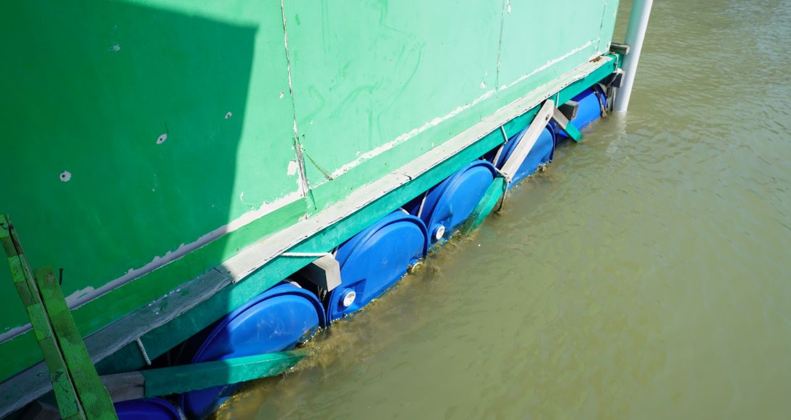
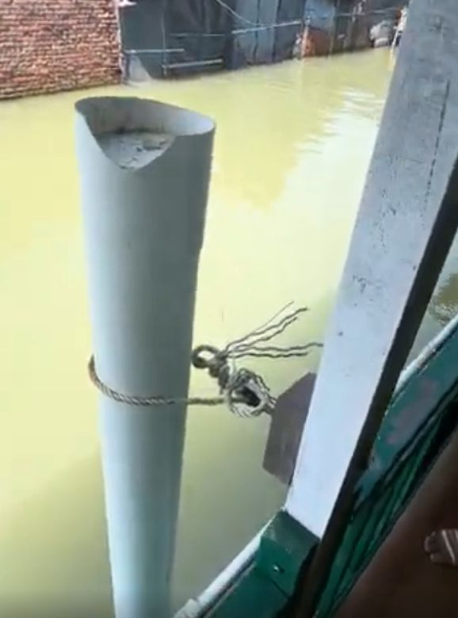

Beranda / Studi kasus
Studi kasus: Madrasah Apung Timbulsloko
Fasilitas pendidikan yang dibangun warga di atas drum plastik, di desa yang sebagian besar daratannya telah tenggelam. Kondisi di bawah ini didokumentasikan saat verifikasi lapangan Juni 2026.
Lokasi dan konteks
Madrasah Apung berada di Dusun Karanggeneng, Desa Timbulsloko, Kecamatan Sayung, Kabupaten Demak, Jawa Tengah. Lokasi dicapai melalui jalan dari Semarang ke Sayung, lalu dengan perahu melintasi kawasan yang tergenang.
Menurut keterangan pemerintah desa, hingga akhir 1990-an desa ini merupakan kawasan pertanian produktif dengan sawah, tambak, dan akses jalan beraspal, dipisahkan dari garis pantai oleh hutan mangrove beberapa kilometer. Sejak awal 2000-an, kombinasi penurunan tanah dan kenaikan muka laut membuat banjir rob makin lama dan sering. Intrusi air asin menyebabkan gagal panen, dan mata pencaharian bergeser dari bertani ke melaut dan buruh Keterangan pemerintah desa.
Kini dusun yang paling terdampak tidak lagi memiliki daratan kering. Warga membangun titian kayu sebagai jalan utama antarrumah. Kondisi ini menentukan batasan teknis: fasilitas harus tetap berfungsi dalam genangan permanen, dapat dirawat dengan material yang diangkut perahu, dan tidak bergantung pada alat berat.
- Stasiun pasang surut
- 6°54′50,80″ LS, 110°31′7,53″ BT Terukur
Buka di OpenStreetMap (tautan luar)
Ganti dengan file: assets/images/lapangan/peta-lokasi.jpgKondisi bangunan yang terdokumentasi
| Komponen | Dimensi / keterangan |
|---|---|
| Bangunan 1 (denah) | ± 7 m × 10 m |
| Bangunan 2 (denah) | ± 5 m × 6 m |
| Tinggi lantai sampai atap | ± 3,5 m |
| Elemen apung | Drum plastik tertutup, nominal 200 L, dipasang horizontal |
| Dimensi acuan drum | Ø 581 mm × 890 mm |
| Jumlah drum Bangunan 1 | 17 di sisi depan, 11 di sisi samping; estimasi total ± 120 Estimasi visual |
| Penyambung pada bangunan | Pipa PVC kelas C nominal 4 inci |
Sumber: Naskah paper kajian lapangan tim (2026), Tabel 2; Laporan kemajuan penelitian (Agustus 2026), Tabel 6.

Rangka bawah dan susunan drum
Drum tidak diletakkan lepas di bawah lantai. Batang kayu tersusun memanjang dan melintang, dengan batang diagonal dan penahan lokal di beberapa titik. Balok keliling mengikat susunan menjadi satu platform, sementara batang melintang dan penahan lokal mencegah drum bergeser dan menggelinding Observasi.
Jalur beban: lantai, dinding, kolom, atap, penghuni, dan perabot → balok dan rangka bawah → drum → gaya apung. Di titik penjepit atau penahan yang memusatkan gaya pada satu bagian kayu, tegangan lokal juga terpusat.
Sistem penahan: tiang pemandu dan tali tambat
Menurut pengurus, tiang pemandu dibuat dengan memancang kayu (disebut warga kayu penggere) ke dasar perairan, lalu memasang pipa PVC di atasnya dan mengisinya dengan grout sehingga terbentuk elemen vertikal yang lebih kaku Dilaporkan warga. Sistem ini membiarkan platform naik-turun mengikuti air sambil membatasi gerak horizontal.
Kerusakan yang pernah terjadi
- Tiang pemandu (kayu pancang) terlepas Dilaporkan warga
- Tali tambat putus Dilaporkan warga
Keduanya berasal dari wawancara dengan pengurus, bukan statistik kegagalan. Keduanya menunjukkan bahwa kinerja penahan ditentukan oleh seluruh rantai: sambungan di platform, tali, tiang, dan jepitan tiang di dasar yang lunak, bukan hanya kekuatan pipa bergrout.

Rangkaian kegiatan lapangan
- 16 Juni 2026Tim berangkat dari Bandung ke Semarang sebagai basis mobilisasi.
- 17 Juni 2026Perjalanan darat dan perahu ke Timbulsloko; wawancara pengurus; observasi bangunan, substruktur, dan penahan; koordinasi survei dengan warga.
- 18 Juni 2026Persiapan survei batimetri bersama tim survei; awal pengamatan pasang surut.
- 19 Juni 2026Tim peneliti kembali ke Bandung; tim survei melanjutkan pengukuran.
- 18 Juni – 2 Juli 2026Pengamatan pasang surut 15 hari dengan AWLR.
Sumber: Naskah paper kajian lapangan tim (2026), bagian 2.2; Laporan kemajuan penelitian (Agustus 2026), bagian C.3.
Tiga jenis informasi, dibedakan dengan jelas
Kegiatan lapangan menghasilkan informasi tentang lingkungan dan akses desa, geometri dan detail teknis bangunan, serta pengalaman warga tentang perubahan lingkungan dan kinerja bangunan. Di seluruh situs, kami membedakan:
- Terukur hasil pengukuran atau dokumentasi langsung
- Diolah hasil pengolahan data
- Dilaporkan warga keterangan narasumber
- Rekomendasi umum interpretasi teknis dan prinsip umum